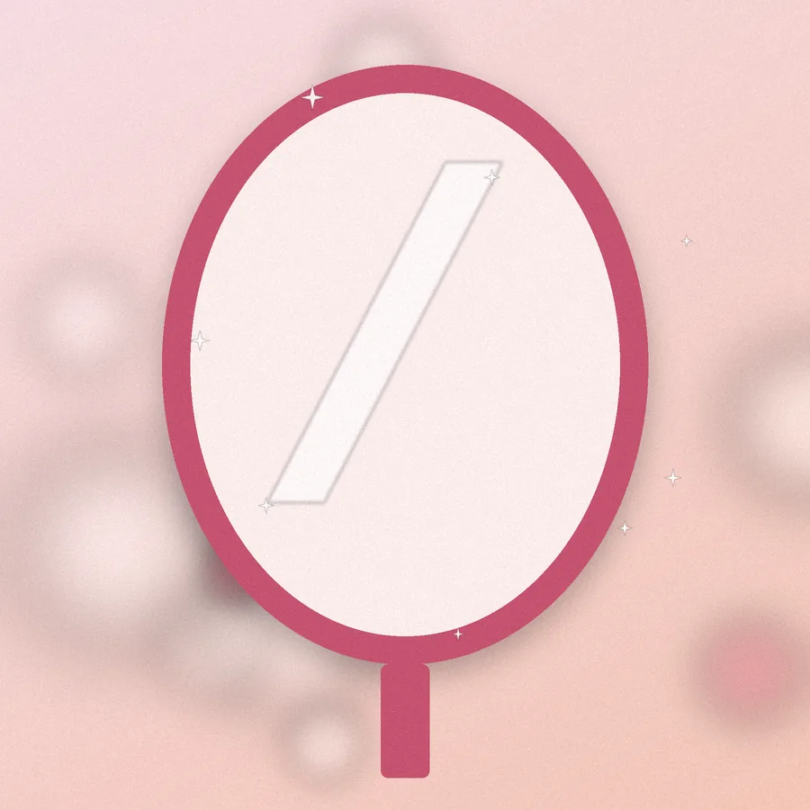

We couldn’t find that page.
The page you are looking for may have moved or no longer exists. Go back to where you were, or start again from the home page.

The page you are looking for may have moved or no longer exists. Go back to where you were, or start again from the home page.